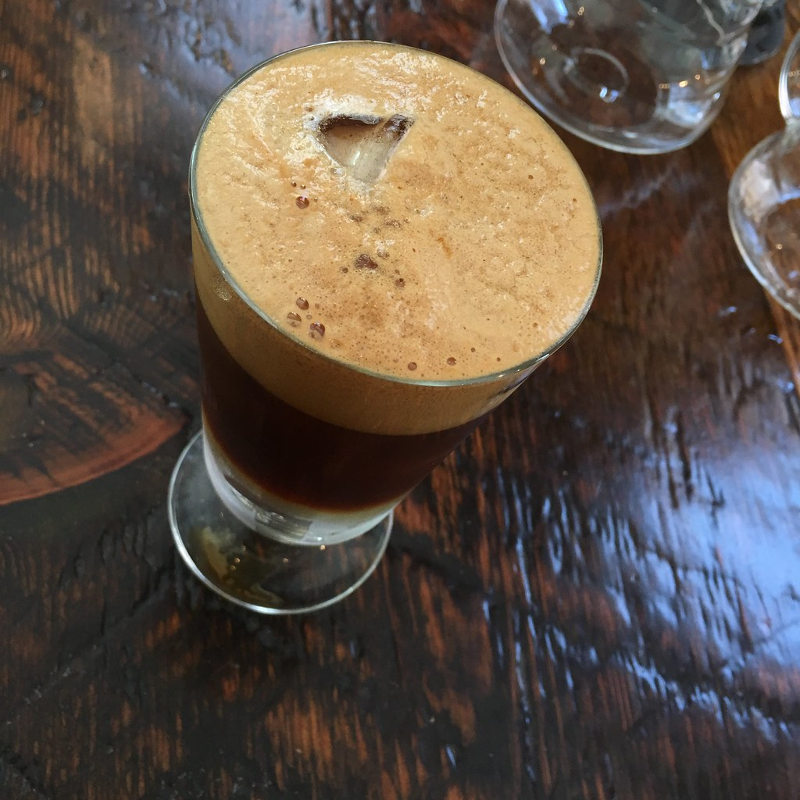
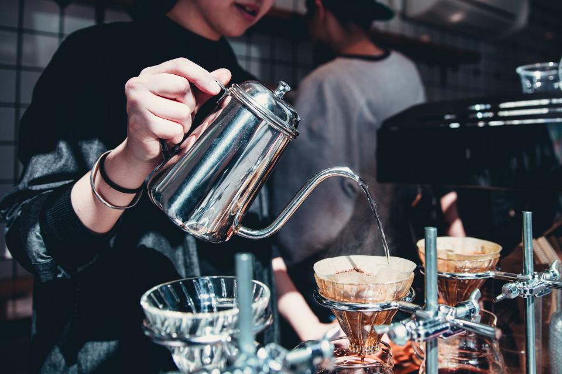
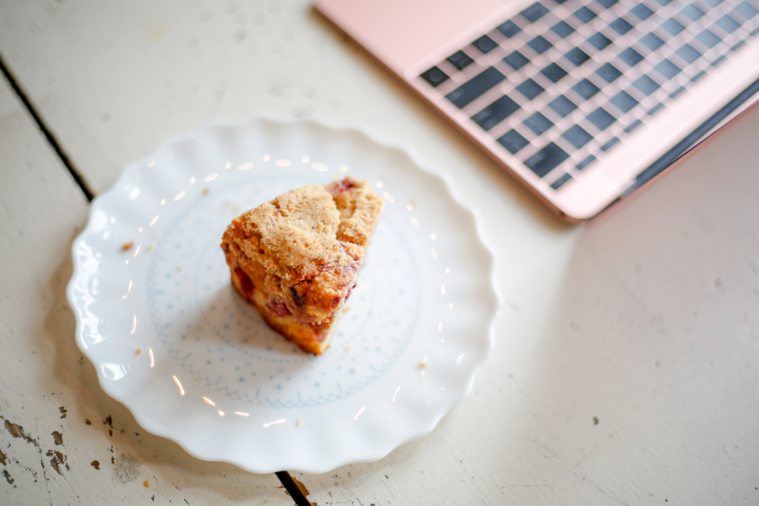
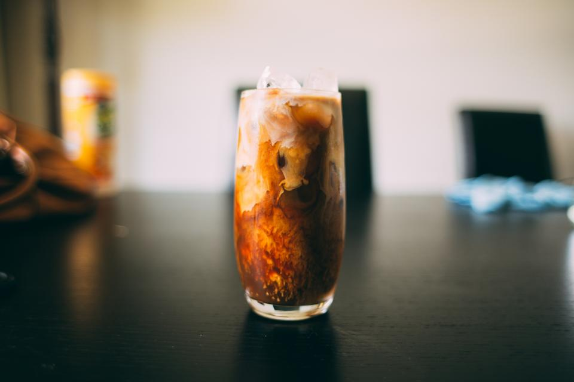
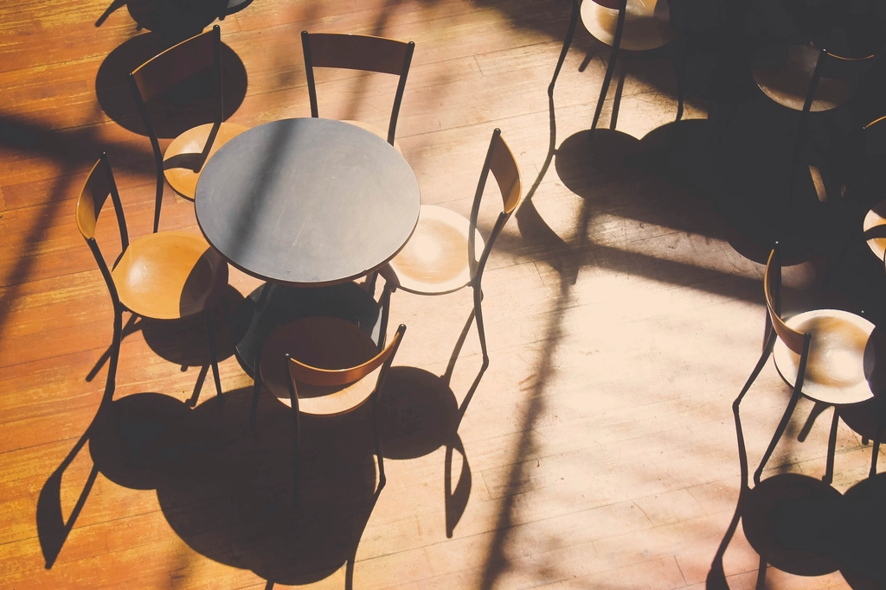

エスプレッソトニック
豆の選定から淹れ方までこだわった、専門性の高い一杯。
price: 準備中装飾を削ぎ落とした、潔い内装。稲生沢川沿いという立地が、肩の力を抜ける時間を生み出します。
豆の選定から抽出まで、一杯ごとに丁寧に。下田では珍しいエスプレッソトニックもご用意しています。
珈琲に詳しくなくても大丈夫。バリスタが豆の特徴をわかりやすくご案内します。

豆の選定から淹れ方までこだわった、専門性の高い一杯。
price: 準備中
豆の個性を生かした、丁寧な一杯。
price: 準備中
甘すぎない、コーヒーに合う味わい。
price: 準備中
季節によって内容が変わります。
price: 準備中「稲生沢川沿いにある、とてもオープンで心地よい空気感のカフェです。建物自体はシンプルで、内装に過度な装飾があるわけではありませんが、それがかえって開放的なロケーションを引き立てていて、リラックスした時間を過ごせます。」
「店内は開放的でつい長居したくなる空間。」
「初訪問。珈琲に詳しくない私にもわかりやすく丁寧に豆の特徴を説明してくださり、スタッフさんも気さくな方でとても居心地の良いお店でした！」
